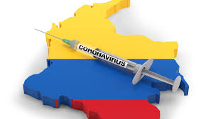

MI OPINION :me parece muy bien que traigan tanta variedad asi los ciudadanos pueden escoger entre mchas bacunas

NOTICIA:las vacunas que yegaron son :Pfizer: 10 millones de dosis adquiridas para 5 millones de personas
AstraZeneca: Colombia compró 10 millones de dosis para 5 millones de personas.
Janssen: 9 millones de dosis para 9 millones de personas
Moderna: el Gobierno Nacional acaba de adquirir 10 millones de dosis para 5 millones de personas
Sinovac: 2.5 millones de dosis para 1.250.000 personas